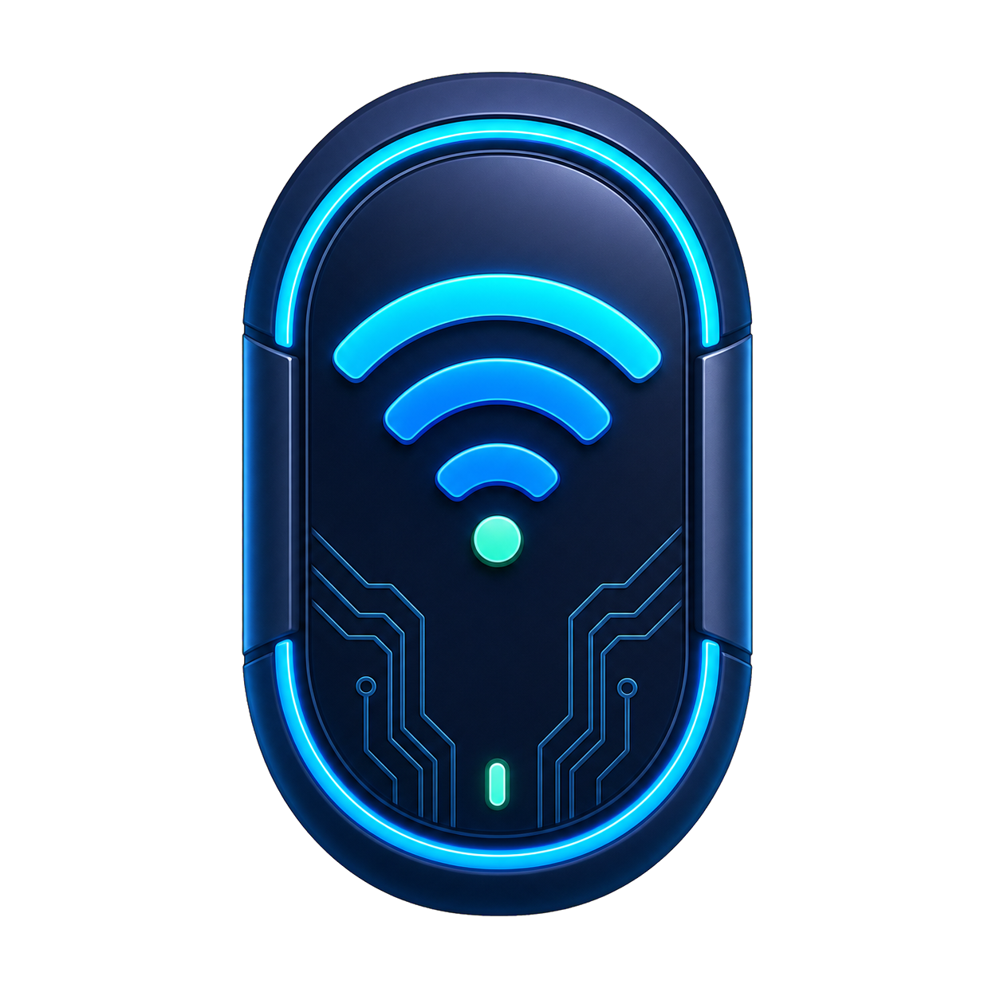
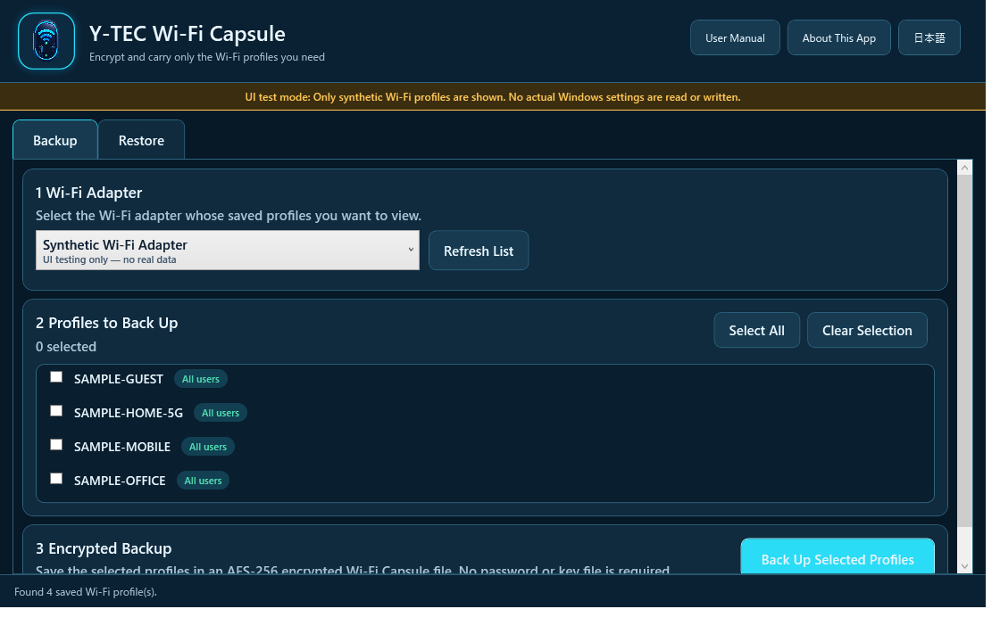
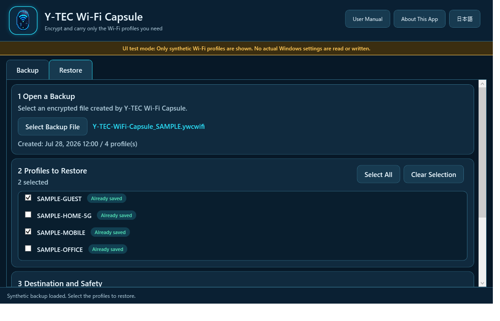

Y-TEC Wi-Fi Capsule
User Manual — Carry only the Wi-Fi profiles you need in an encrypted file
Version 1.1.0 / August 25, 20261. About This App
Y-TEC Wi-Fi Capsule lists the Wi-Fi profiles saved in Windows and lets you save and restore only the profiles you choose in one encrypted file.
- No password or key file needs to be prepared.
- Backup files use the
.ywcwifiextension. - Plaintext Wi-Fi profile XML is never saved to disk.
- The app has no external communication, cloud sync, or analytics.
- Official Y-TEC builds are compatible with official backups from version 1.0.0 onward.
- The interface supports Japanese and English and can be switched while the app is running.
Wi-Fi names are shown so that you can select profiles. The app never displays Wi-Fi keys on screen or writes them to a log.
2. Requirements and Startup
| Item | Requirement |
|---|---|
| Windows | Windows 7 SP1 / 8 / 8.1 / 10 / 11 |
| CPU | 32-bit or 64-bit |
| Environment | .NET Framework 4.6.1 or later, a Wi-Fi adapter, and WLAN AutoConfig |
| Permissions | Administrator privileges are required at startup |
Extract the distribution ZIP to any folder. Do not launch the app from inside the ZIP.
Double-click
YtecWifiCapsule.exe.If User Account Control appears, verify the publisher and download source, then select Yes.
The initial language is Japanese when the Windows display language is Japanese; otherwise it is English. Use English / 日本語 in the app to switch for the current session. The manual opens in the current app language.
The initial public release is unsigned. Compare the ZIP's SHA-256 with the value on the official download page before running it.
Windows 7, 8, and 8.1 are no longer supported by Microsoft. App compatibility does not make those operating systems secure.
3. Back Up Wi-Fi Profiles
Open the Backup tab.
Select the Wi-Fi adapter. If the list is outdated, select Refresh List.
Select only the profiles you want to save. You can also use Select All and Clear Selection.
Select Back Up Selected Profiles and verify the profile count in the confirmation dialog.
Choose a destination and a new file name. Existing files are never overwritten.
When Backup Complete appears, move the file to a secure storage location.

If a profile changes after selection, the app stops. Refresh the list and select the profiles again.
4. Restore Wi-Fi Profiles
Open the Restore tab.
Use Select Backup File to open a
.ywcwifi file.Verify the creation time and profile count, then select only the profiles you want to restore.
Select the destination Wi-Fi adapter.
Normally, leave overwrite disabled and select Restore Selected Profiles.
Check the restored, unchanged, and failed counts.

After restoring, open Windows Wi-Fi settings and verify that the target network can be connected.
5. Profiles with the Same Name
The restore list shows the state of each profile on the destination adapter.
| Display | Default behavior |
|---|---|
| New | The selected profile is added to Windows. |
| Already saved | The existing profile is skipped without changes when overwrite is disabled. |
Enabling Overwrite saved Wi-Fi profiles with the same name replaces selected profiles with matching names. Leave it disabled if the current profiles must be preserved.
6. Encryption and Storage
- AES-256-CBC encrypts the content, and HMAC-SHA-256 detects tampering.
- Each backup uses a random salt and initialization vector.
- The app does not decrypt content until authentication succeeds.
- No password, external key file, or PC-specific key is used.
Because official builds use an embedded application key, a backup can be moved to another PC and restored with the official app.
Official Y-TEC builds embed the compatibility key during the build. The official key is not included in the public source code.
A standard public-source build uses a publicly known development key and displays a warning at the top of the window. Do not use that build for real data. Custom-key builds are not compatible with official Y-TEC builds.
Even an official build cannot guarantee confidentiality against an attacker capable of advanced executable or memory analysis. Never publish or give a backup file to an untrusted party.
Keep important profiles on more than one secure storage medium rather than relying on a single encrypted file.
7. Troubleshooting
| Symptom | What to check |
|---|---|
| No Wi-Fi adapter | Confirm that the wireless device is enabled and the WLAN AutoConfig service is running. |
| No saved profiles | Select the correct adapter, then select Refresh List. |
| The Wi-Fi key cannot be read | Confirm that the app is running as administrator. A management policy may prevent access. |
| A backup will not open | Check the extension, file completeness, app build compatibility, and possible tampering. |
| Restore fails | Check administrator privileges and whether the destination OS and adapter support the authentication method. |
| A same-name profile does not change | The safe default is to skip it. Enable overwrite only when replacement is intended. |
8. Limitations
- The app does not automatically connect to Wi-Fi networks.
- It does not collect nearby networks, BSSIDs, or location data.
- Migration of enterprise 802.1X certificates, external certificates, smart cards, and hardware keys is not guaranteed.
- Registration can fail when an older Windows version does not understand a newer authentication method.
- Windows on ARM, Windows Server, macOS, Linux, and mobile operating systems are not supported.
- Windows SmartScreen may warn about unsigned builds. The app does not provide instructions to bypass security warnings.
- Open-source availability does not make a third-party build official or compatible with official backups.